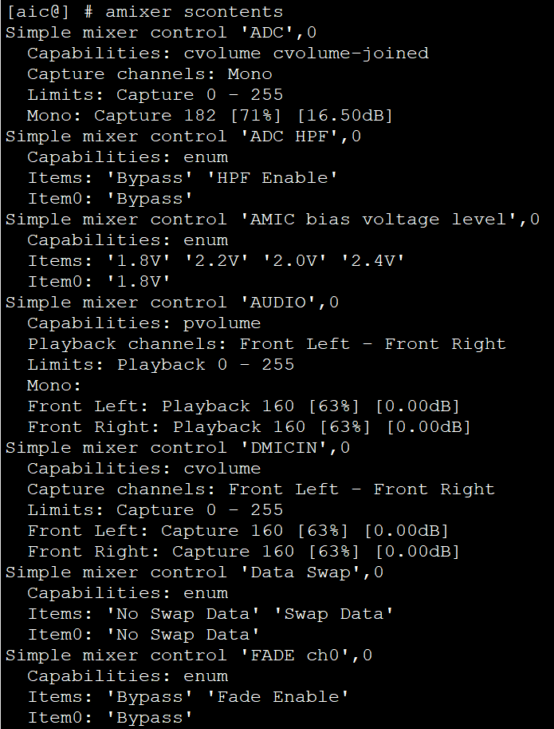
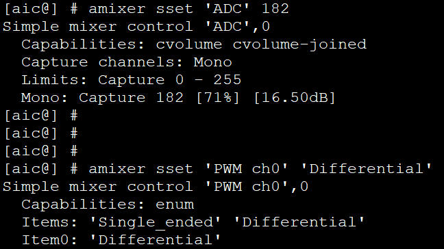

6.9.4. 测试指南¶
6.9.4.1. 测试环境¶
6.9.4.1.1. 硬件¶
测试板：带有DMIC的测试板
PC：用于和测试板交互
串口线：连接测试板的调试串口
6.9.4.1.2. 软件¶
PC端串口终端软件
alsa-lib和alsa-utils第三方软件包
6.9.4.2. 创建声卡¶
AudioCodec是SOC内置的codec，所以在AudioCodec的驱动中，已直接创建声卡，不需要再单独编写machine驱动。在按照 AudioCodec配置 配置后，内核会创建出名aic-SoundCard的声卡，对此声卡进行操作即可。
6.9.4.3. 音频测试¶
6.9.4.3.1. 配置音频路径¶
AudioCodec的音频通路中，存在较多的开关，混音器，数字音量调节器，多路选择器等器件。所以在执行 播放或录音任务前，需要先配置音频路径，使音频数据可以正确流通。
6.9.4.3.1.1. 自动配置¶
在SDK的target/aic16xx/perxx/rootfs_overlay/var/lib/alsa目录下，存放有asound.state文件，该文件保存的是声卡各个控件的配置值。在内核启动时，会自动加载该文件， 完成音频通路的配置。
6.9.4.3.1.2. 手动配置¶
一般使用asound.state文件默认的配置即可。如果内核启动时的默认配置不满足需求，也可以通过amixer工具进行手动配置。amixer的使用方法如下：
amixer sset 'control-name-string' value
control-name-string和value的值可以通过以下方式查看：

修改设置示例：

修改完成后，可以通过alsactl命令将修改保存到asound.state文件中。在后续的上电过程中，内核会加载最新的修改配置。
alsactl -f /var/lib/alsa/asound.state store
6.9.4.3.2. 测试音频播放¶
aplay test.wav
6.9.4.3.3. 测试音频录音¶
arecord -d 10 -f dat -t wav test.wav
-d：指定录音时长，单位为秒
-f：指定录制的格式，dat表示16bit小端数据，48K采样率，立体声
-t：指定生成的文件格式，为wav文件
test.wav：生成的wav文件名
6.9.4.3.4. 调整播放音量¶
amixer sset 'AUDIO' 140
6.9.4.3.5. 调整DMIC录音音量¶
amixer sset 'DMICIN' 140
6.9.4.3.6. 调整AMIC录音音量¶
amixer sset 'ADC' 140
6.9.4.3.7. 调整PGA增益¶
amixer sset 'PGA Gain' 8